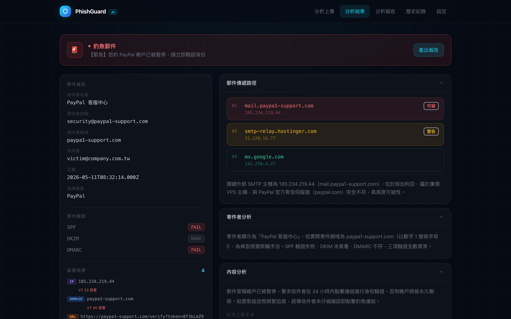
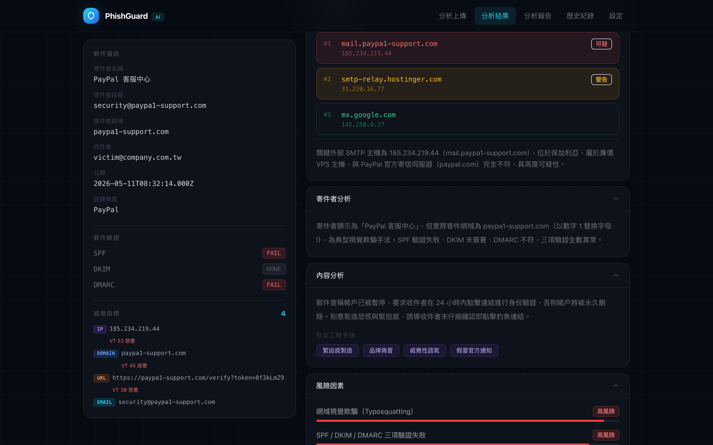
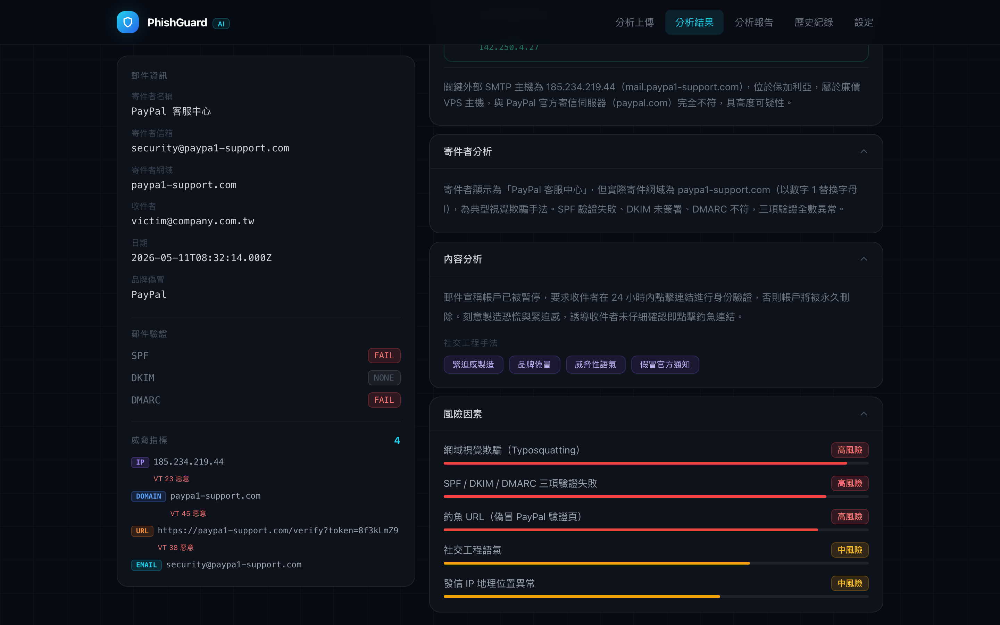
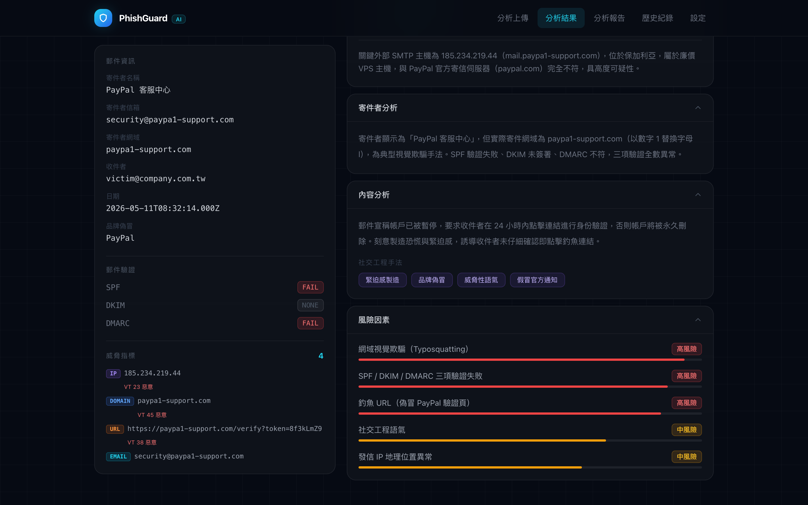
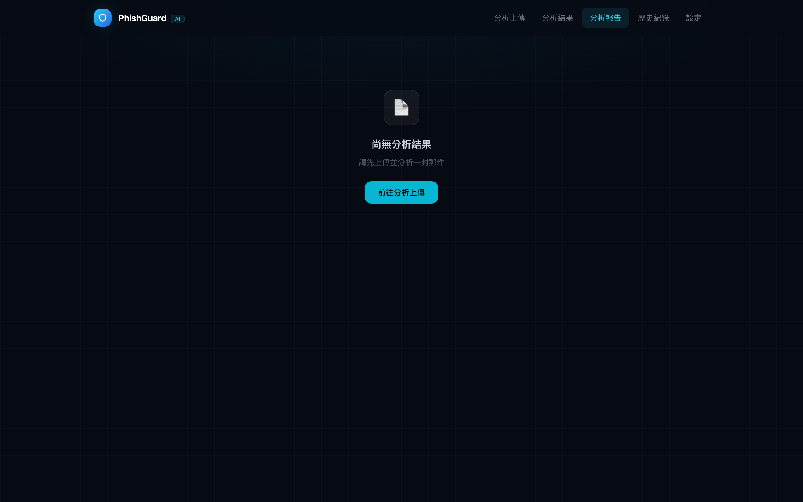
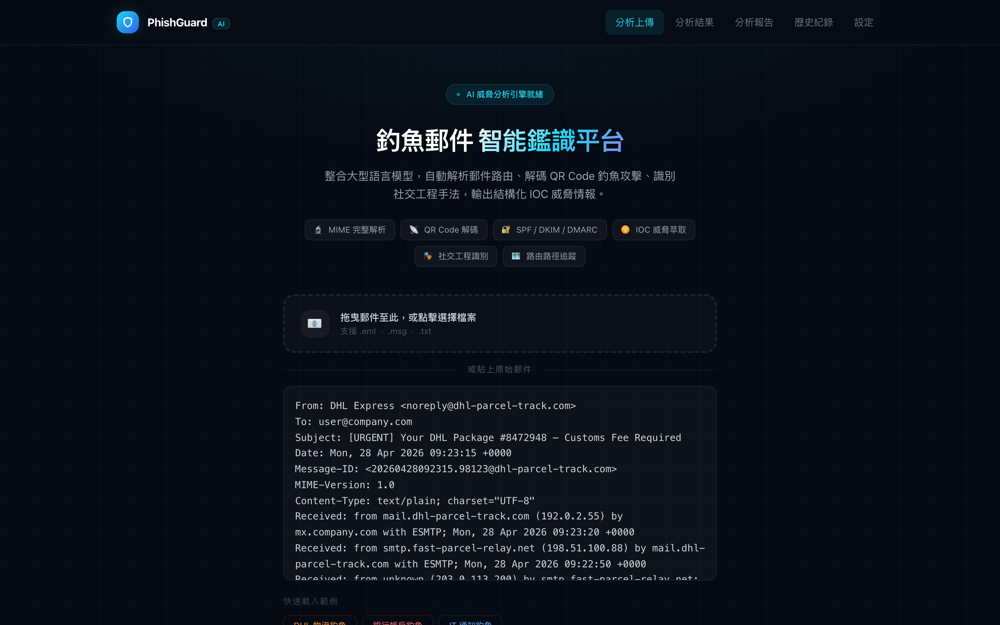
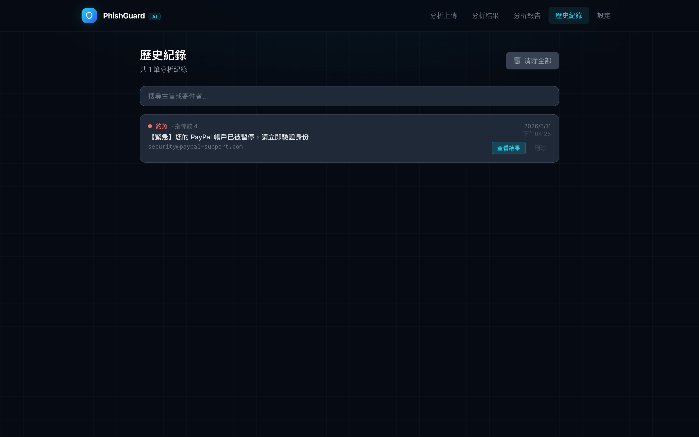

← 返回作品集
Full-Stack
AI / LLM
Threat Intelligence
PhishGuard
釣魚郵件分析平台.
上傳 .eml 原始郵件，AI 自動完成研判、SMTP 路由追蹤、IOC 萃取與情資豐富化，輸出一份可直接呈報主管的繁體中文鑑識報告。
React + TypeScript
Express + Node.js
Kimi K2.6
VirusTotal API
URLScan
OpenCTI
jsQR + Jimp
01
系統畫面







02
核心功能
🤖
AI 研判引擎
Kimi K2.6 輸出結構化 JSON，包含 PHISHING / SUSPICIOUS / SAFE 研判及社交工程分析。
🗺️
SMTP 路由重建
從 Received headers 重建完整傳遞路徑，自動處理 IPv4-mapped IPv6。
🔍
情資豐富化
VirusTotal、URLScan 沙箱、IP 地理定位、WHOIS 全部並行執行。
📷
QR Code 解碼
附件圖片 QR 解碼，以及偵測 HTML table 拼出的 QR code（駭客規避技術）。
📄
中文報告產生
自動組裝繁體中文分析報告，包含 IOC、風險因素與處置建議。
🛡️
去識別化工具
純前端執行，將 email / IP / hash 替換成無意義 token 以安全分享。
← 返回作品集
Full-Stack
AI / LLM
React
Node.js